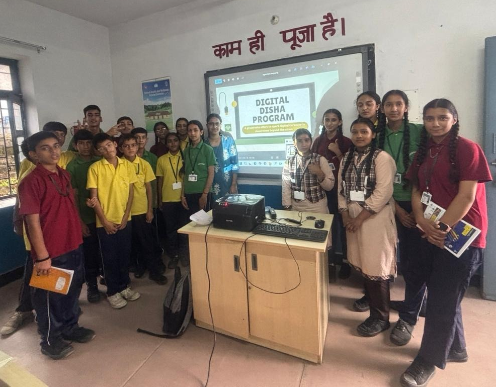

Founder • Digital Literacy Initiative
Digital Disha
A grassroots digital literacy initiative focused on helping students in less connected and
rural areas gain the digital skills they need to grow in today’s world.
Clicking on the link below opens Digital Disha's Website.